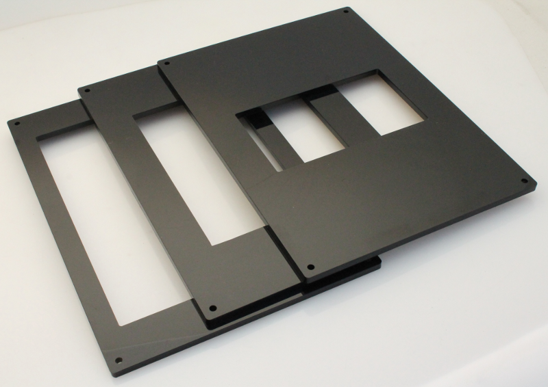
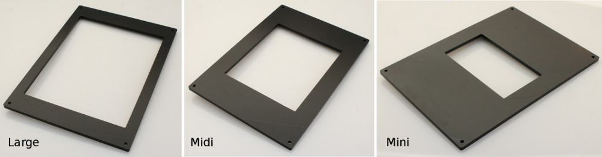
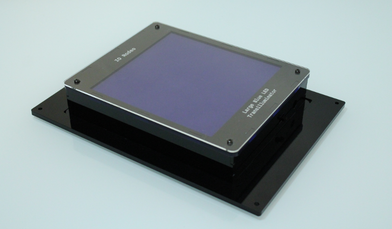
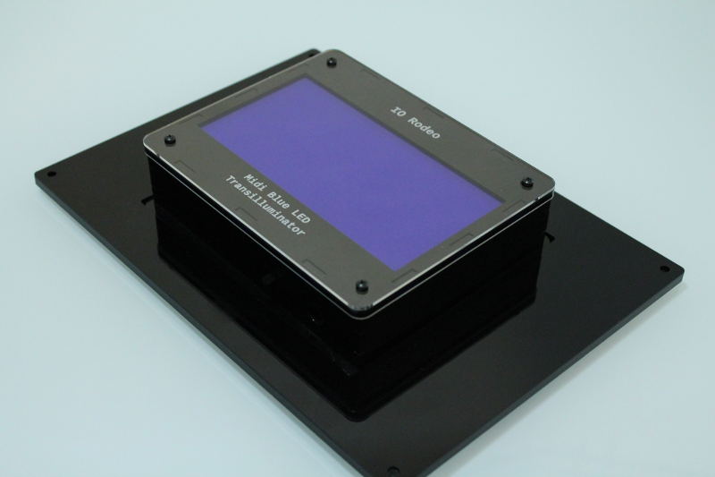
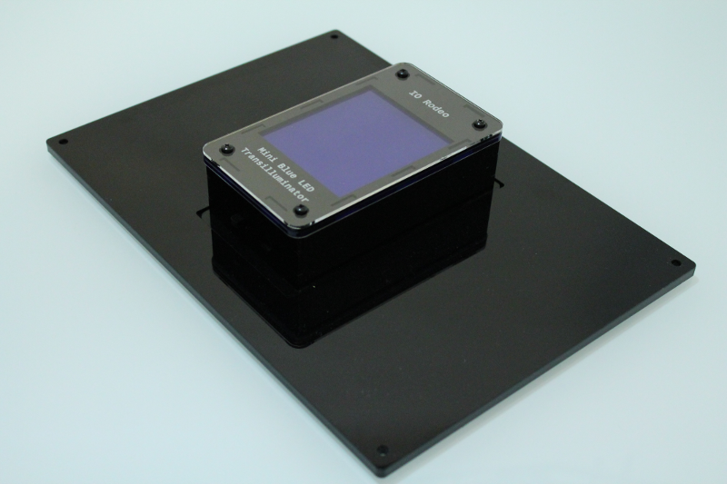

Acrylic transilluminator frames¶
Each kit includes one transilluminator frame. Several frame sizes are available: Mini, Midi or Large.
Frames are 7.5” x 10.5” and are laser cut from 0.25” black acrylic. They have a cutout designed to fit our range of blue LED transilluminators.
Cutout sizes:
- Mini frame - 7.5 cm x 13.4 cm
- Midi frame - 13.5 cm x 15.7 cm
- Large frame - 20.6 cm x 16 cm
The frames help to position the gel viewing area and prevent the transilluminator from moving during photography.
Four corner mounting holes for mounting into the enclosure.


The transilluminators sit into these frames as shown below
Large¶

Midi¶

Mini¶
